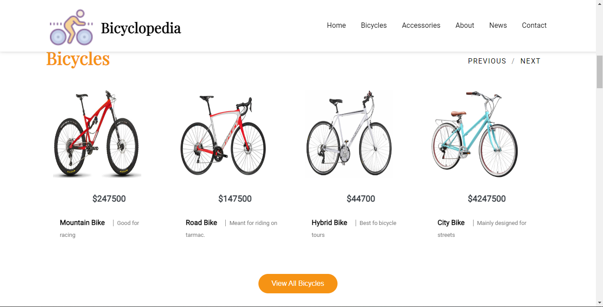
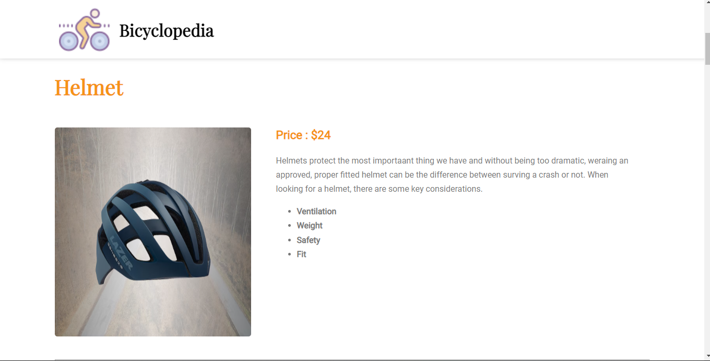

Bicycle Landing Page



Project Purpose and Goal
A bicycle landing page displaying various types of bicycles as well as it's price. Enables clients to view various bicycles available for rentals and purchasing. The accessories section gives users a view of bicycle accessories for their comfort.
Web Stack and Explanation
Built the architecture using HTML and designed/styled it with CSS. Used JavaScript to add funtionality to the bicylces section and the accessories section to view all available items and thier corresponding prices respectively. Clicking on these two buttons leads to thier corresponding webpages with a description of the items in stock.